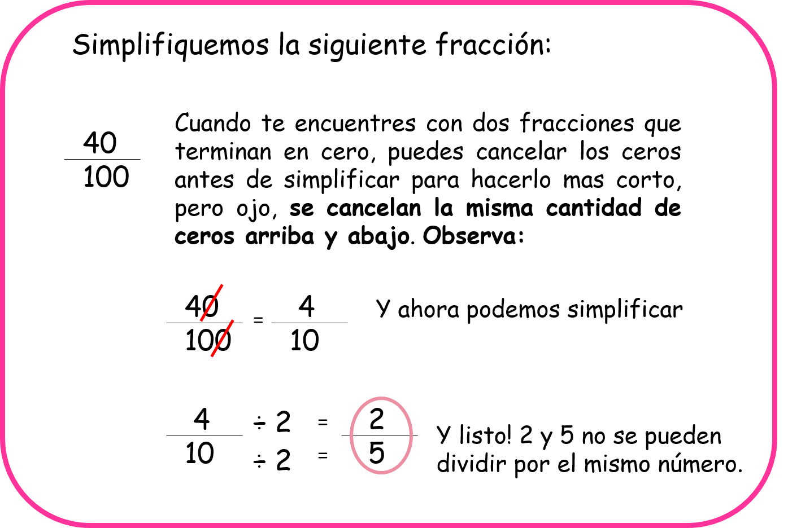
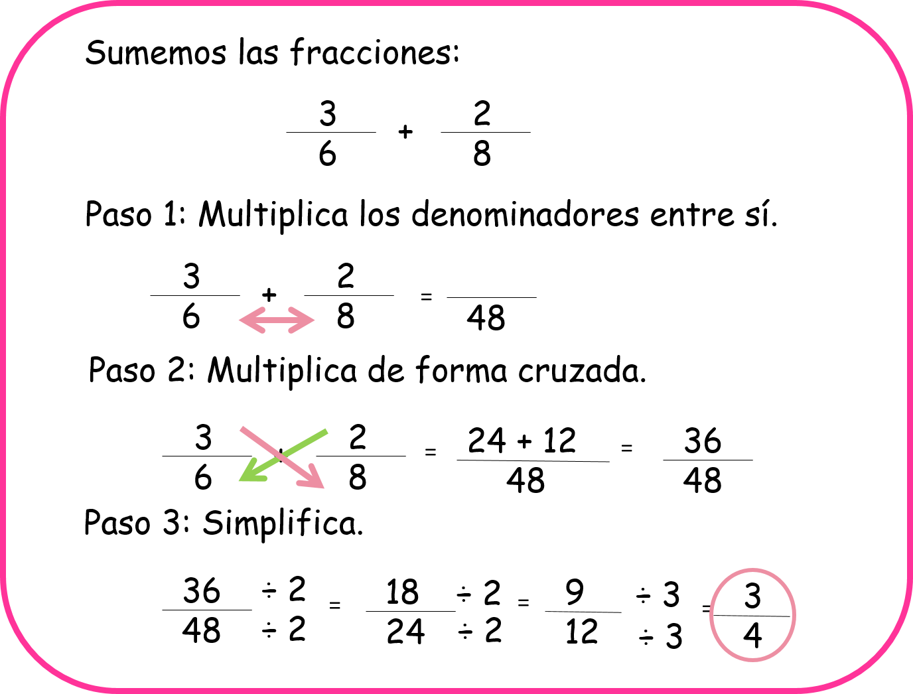
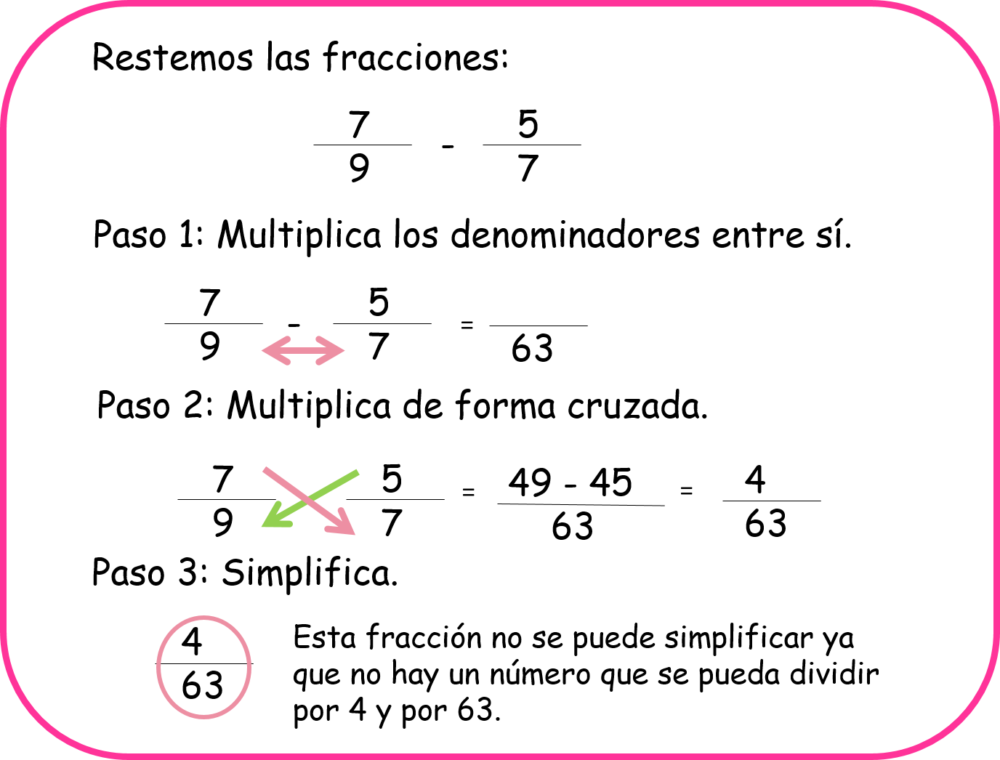

Suma y resta de fracciones con diferente denominador
En este capítulo vas a usar la división, la multiplicación, la suma y la resta
¿Para qué nos sirve la suma y la resta de fracciones heterogéneas?
Cuando tenemos fracciones heterogéneas es decir que tienen distinto denominador y necesitamos sumarlas o restarlas, debemos realizar un procedimiento diferente al que usamos con las fracciones homogéneas.
Pensemos por ejemplo en la siguiente situación problema:
Como puedes observar, en la situación problema de felipe nos encontramos con dos fracciones que no tienen el mismo denominador, y aquí necesitaremos aprender a resolver este tipo de operaciones.
- ¿Qué aprenderemos?
- Simplificación de fracciones
- Suma de fracciones con diferente denominador
- Resta de fracciones con diferente denominador
(1)Simplificación de fracciones
simplificar fracciones es transformarlas en fracciones más simples y con números más pequeños, para hacer esto es muy práctico recordar algunos de los criterios de divisibilidad más usados, estos son:
Ahora, para simplificar fracciones vamos a seguir unos pasos muy sencillos:
Observa:
A. Paso 1:
Vamos a dividir el numerador y el denominador por el mismo número. Para hacerlo podemos fijarnos primero por cuál número se pueden dividir los dos números que tenemos en el numerador y en el denominador, empezando siempre por 2, luego por 3, después por 4, luego por 5, etc. el número que elijamos para simplificar nos debe dar una división exacta.
Observa:
B. Paso 2:
Cuando nos encontramos una fracción que tiene en su numeador y en su denominador números que terminan en cero o en ceros podemos hacer más sencilla la simplificación cancelando la misma cantidad de ceros arriba y abajo.
Observa:
(2)Suma de fracciones con diferente denominador
Para sumar fracciones heterogéneas solo tendremos que seguir tres pasos:
A. Paso 1:
Multiplicamos los denominadores entre sí.
B. Paso 2:
Multiplicamos de forma cruzada numeradores y denominadores y sumamos los resultados.
C. Paso 3:
Simplificamos la fracción que nos dió como resultado si es posible hacerlo.
Observa:
(3)Resta de fracciones con diferente denominador
Para restar fracciones con diferente denominador solo tenemos que seguir tres pasos:
A. Paso 1:
Multiplicamos los denominadores entre sí.
B. Paso 2:
Multiplicamos de forma cruzada numeradores y denominadores y restamos los resultados.
C. Paso 3:
Simplificamos el resultado obtenido si es posible.
Observa:
Material extra para trabajar el tema de suma y resta de fracciones heterogéneas:
En este enlace podrás descargar una ficha con variados ejercicios sobre suma y resta de fracciones heterogeneas creada por Fichasparaimprimir.com
Siguiendo este enlace podrás encontrar una ficha con ejercicios diferentes sobre fracciones homogéneas y heterogéneas creada por Fichasparaimprimir.com
Vídeos orientativos:
En el vídeo “Suma y resta de fracciones heterogéneas” de matematicasprofealex.com encontrarás una explicación sencilla y efectiva sobre la suma y la resta de fracciones con diferente denominador.